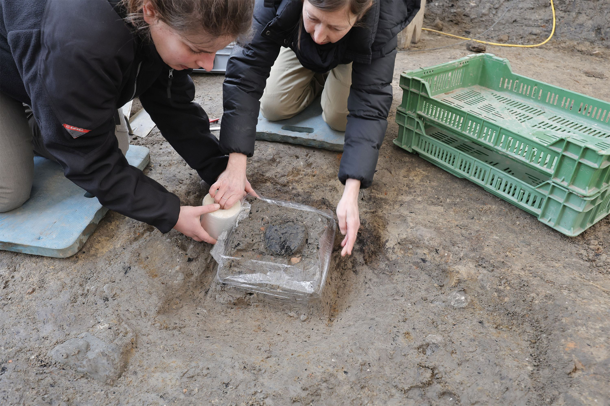

This 2-day climb is an ambitious itinerary, and the one we guide more than any other.
It’s a great choice for strong hikers looking to get into alpine climbing,
and it’s the go-to option for most with people looking to make their first ascent of Mt. Shasta.
If time allows, we recommend looking at our 3-Day Mt Shasta Avalanche Gulch climb itinerary as-well.
see link
Yerevan /Mediamax/. French President Emmanuel Macron has sent a letter of support to Armenian Prime Minister Nikol Pashinyan, in which he notes that another French medical team will arrive in Yerevan to replace the one that is currently helping Armenian medics treat COVID-19 patients. tesnel avelin
Այսօր՝ ապրիլի 23-ին, խոշոր ավտովթար է տեղի ունեցել Երևանում։ Ժամը 12:40-ի սահմաններում Մյասնիկյան պողոտայում՝ Կենդանաբանական այգու դիմաց, բախվել են Երևանի բնակիչներ 19-ամյա Վարդան Մ.-ի վարած «Mercedes CLS» մակնիշի, 28-ամյա Կորյուն Մ.-ի վարած «Jaguar» մակնիշի, 34-ամյա Տաթևիկ Ա.-ի վարած «Toyota» մակնիշի և Գեղարքունիքի մարզի բնակիչ 40-ամյա Սամվել Ա.ի վարած՝ Երևանի քաղաքապետարանի հաշվեկշռում հաշվառված թիվ 53 երթուղին սպասարկող ավտոբուսը։ see link
A discovery beside a forest track in northern Denmark has revealed one of the countries most important Viking Age gold hoards in decades. Archaeologists uncovered six solid gold arm rings near Rold in Himmerland, a find now known as the Rold Treasure, which ranks as the third-largest Viking Age gold discovery ever recorded in Denmark. see link

The piece of bread measures 10 centimeters in diameter and about three centimeters thick. Further tests are planned at a laboratory in Vienna to determine what the bread was made of. see link
ԱՄՆ-ն ու Իրանը հայտնել են, որ մոտ են ժամանակավոր խաղաղության համաձայնության, որը կարող է նվազեցնել լարվածությունը Մերձավոր Արևելքում։ see link

João Fonseca անունով 19-ամյա թենիսիստը մեծ անակնկալ է մատուցել՝ հաղթելով Novak Djokovic-ին Ֆրանսիայի բաց առաջնությունում։ see link